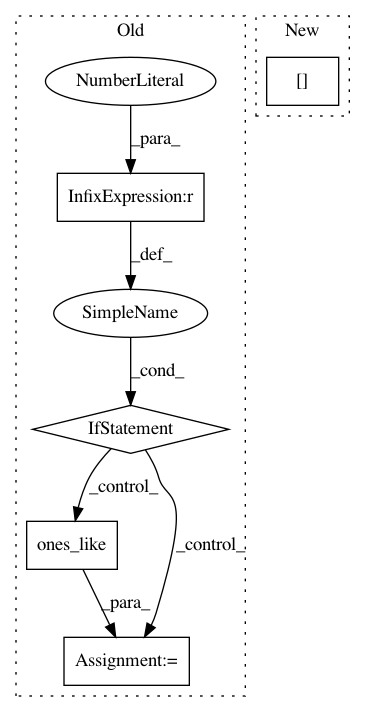

a8c287c0b970968feeaae325379668755760a25b,cnvlib/fix.py,,apply_weights,#Any#Any#Any#,219
Before Change
// Weight is proportional to variance, 0--1
variances = ref_matched["spread"] ** 2
max_variance = variances.max()
if max_variance == 0:
weights = numpy.ones_like(variances)
else:
weights = 1.0 - (variances / max_variance)
// Avoid 0-value bins -- CBS doesn"t like these
weights[weights <= min_weight] = min_weight
return cnarr.add_columns(weight=weights)
After Change
- the "spread" column of the reference.
// Relative bin sizes
sizes = ref_matched["end"] - ref_matched["start"]
weights = sizes / sizes.max()
// Relative coverage depths
if (numpy.abs(ref_matched["coverage"]) > epsilon).any(): // basically nonzero
In pattern: SUPERPATTERN
Frequency: 3
Non-data size: 5
Instances
Project Name: etal/cnvkit
Commit Name: a8c287c0b970968feeaae325379668755760a25b
Time: 2015-05-01
Author: eric.talevich@gmail.com
File Name: cnvlib/fix.py
Class Name:
Method Name: apply_weights
Project Name: bashtage/linearmodels
Commit Name: cf6a25ed5aae0f78e42b7b9594f54772880aaf53
Time: 2017-04-02
Author: kevin.k.sheppard@gmail.com
File Name: linearmodels/panel/model.py
Class Name: BetweenOLS
Method Name: fit
Project Name: suavecode/SUAVE
Commit Name: 0de7a2181e4cddb4c10f8bfd3b8ea43e18fbb19e
Time: 2015-04-30
Author: jmvegh@stanford.edu
File Name: trunk/SUAVE/Components/Energy/Networks/Battery_Ducted_Fan.py
Class Name: Battery_Ducted_Fan
Method Name: evaluate_thrust